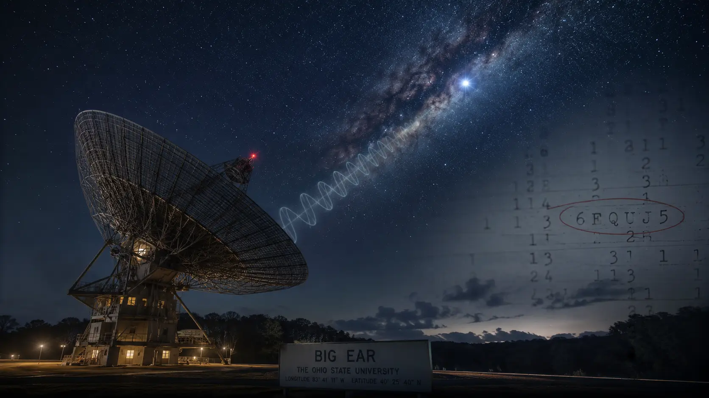
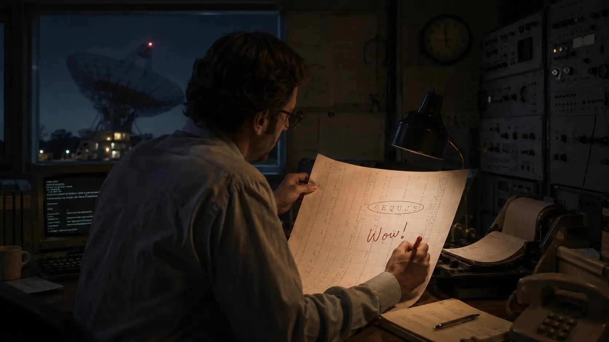
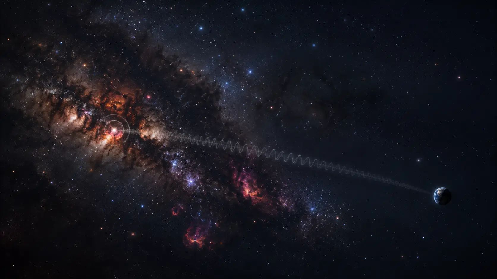

1. The 72 Seconds That Started a Mystery
On August 15, 1977, the Big Ear radio telescope at Ohio State University was scanning the sky as part of the search for signals that might reveal the existence of intelligent life beyond Earth.
Most of what it detected was unremarkable: the familiar background of radio emissions coming from the universe. But that night, something very different crossed the telescope's field of view.
A remarkably strong, narrowband radio signal appeared from the direction of Sagittarius.
It lasted for approximately 72 seconds.
And then it was gone.
The discovery did not immediately cause an alarm at the observatory. Big Ear recorded its observations on continuous computer printouts, which were later examined by researchers. A few days after the signal had been received, volunteer astronomer Jerry R. Ehman was reviewing the data when one sequence caught his attention:
6EQUJ5
The characters represented the changing intensity of the radio signal recorded by the telescope. What Ehman saw was so unusual that he circled the sequence and, almost instinctively, wrote a single word in red ink beside it:
“Wow!”
That spontaneous reaction gave the signal the name by which it would become known around the world.
What made the detection so intriguing was not simply its strength. The signal was narrowband, appeared near the frequency associated with neutral hydrogen, and its intensity rose and fell in a way consistent with a fixed celestial source passing through Big Ear's observing beam as Earth rotated.
Those characteristics made it especially interesting to researchers involved in the Search for Extraterrestrial Intelligence, or SETI.
But there was a problem.
The signal disappeared.
Researchers returned to the same region of the sky and other astronomers would search for it again in the decades that followed. Yet no confirmed repetition of the original Wow! signal has ever been detected.
There was no recorded voice.
There was no decipherable extraterrestrial message.
And 6EQUJ5 was not an alien code, despite how mysterious the sequence may appear.
What Big Ear recorded was something simultaneously simpler and more puzzling: an exceptionally unusual radio signal whose source could not be conclusively identified.
Nearly half a century later, the event remains one of the most famous mysteries in the history of the search for extraterrestrial intelligence.
Was it an unusual natural astronomical phenomenon?
Could it have been interference of human origin?
Or did Big Ear briefly detect something far more extraordinary?
To understand why those 72 seconds became so famous, we first need to understand exactly what the telescope detected.
2. What Was the Wow! Signal?
Despite its legendary status, the Wow! signal was not a message that anyone could read or listen to. No voice came through a speaker, no sequence of words was received, and there was no obvious encoded greeting from another civilization.
What Big Ear detected was a powerful, narrowband radio signal.
Radio telescopes do not observe the universe in visible light like ordinary optical telescopes. Instead, they detect radio waves emitted by sources in space. Many astronomical objects naturally produce radio emissions, and the sky contains a constant background of radio noise. The challenge is identifying signals that stand out from that background in unusual ways.
The Wow! signal did exactly that.
A remarkably narrow signal
At the time, Big Ear's receiver was monitoring 50 frequency channels, each 10 kilohertz wide. The Wow! signal appeared strongly in only one of those channels, meaning its actual bandwidth was narrower than the telescope's 10 kHz frequency resolution.
That was important.
Natural astronomical radio sources often emit energy across relatively broad ranges of frequencies. A concentrated narrowband signal can therefore attract particular attention in searches for extraterrestrial technology, because artificial transmitters are capable of producing radio emissions concentrated into extremely narrow frequency ranges.
That does not mean a narrowband signal must be artificial.
It means that such a signal is interesting enough to investigate.
Close to the hydrogen line
Another intriguing characteristic was its frequency.
The signal was detected very close to 1,420 MHz, the frequency region associated with the 21-centimeter spectral line of neutral hydrogen.
Hydrogen is the most abundant element in the universe, and its characteristic radio emission has long held special significance in radio astronomy and SETI. Long before the Wow! signal appeared, scientists had suggested that the region around the hydrogen line could be a logical place to search for deliberate interstellar communications.
The reasoning is simple: an advanced civilization attempting to attract the attention of another technological civilization might choose a frequency associated with something that astronomers everywhere would recognize.
Once again, however, proximity to the hydrogen line is not evidence that the Wow! signal was deliberately transmitted. It is one of the characteristics that made the detection unusually interesting.
Why did it last 72 seconds?
The famous 72-second duration is also frequently misunderstood.
It does not necessarily mean that whatever produced the signal transmitted for exactly 72 seconds.
Big Ear was effectively allowing Earth's rotation to sweep different regions of the sky through its observing beam. A fixed celestial radio source would therefore gradually enter the telescope's sensitivity pattern, become stronger as it approached the center of the beam, and then fade as it moved away.
That is remarkably similar to what happened with the Wow! signal.
Big Ear recorded the signal at approximately 12-second intervals. Six consecutive measurements showed its intensity rising dramatically, reaching a peak, and then falling again.
Six measurements separated by approximately 12 seconds produced the famous observational window of about 72 seconds.
Even more importantly, Jerry Ehman later found that the rise and fall of those measurements matched Big Ear's expected antenna response extremely well. In other words, the signal behaved much like a compact radio source fixed in the sky would behave as Earth's rotation carried the telescope's beam past it.
That made a simple, brief burst of local radio interference less straightforward as an explanation.
But it did not prove that the source was extraterrestrial.
A signal that stood dramatically above the background
The signal's strength was encoded in the now-famous sequence:
6EQUJ5
Each character represented the measured signal intensity relative to the background noise during a successive observation interval. The sequence records a rapid increase in strength, an extraordinary peak, and then a decline.
The letter U represented the strongest measurement in the sequence and corresponded to a signal roughly 30 standard deviations above the established background level in the system's coding scheme—an exceptionally prominent detection.
This is why Ehman immediately recognized that he was looking at something unusual.
But 6EQUJ5 was not the content of the signal.
It was Big Ear's way of recording how strong the detected radio emission was over time.
The meaning of those six characters—and why they have so often been mistaken for some kind of extraterrestrial code—deserves a closer look of its own.
What Big Ear actually detected
Stripped of decades of mythology, the basic observation can be summarized surprisingly simply.
On August 15, 1977, Big Ear detected a strong, narrowband radio signal from the sky near the frequency of neutral hydrogen. Its intensity increased and decreased during the approximately 72 seconds that the source passed through the telescope's observing beam, following a pattern consistent with a compact celestial radio source.
Then it disappeared.
That combination of characteristics made the signal extraordinary.
It did not prove the existence of extraterrestrial intelligence. It did not contain a decoded alien message. And it did not provide enough information to determine its source.
It gave astronomers something far more frustrating:
a remarkably interesting signal with no confirmed explanation.
And the six characters that preserved those 72 seconds—6EQUJ5—would soon become almost as famous as the signal itself.
3. What Does “6EQUJ5” Actually Mean?
Few details of the Wow! signal have become as iconic—or as misunderstood—as the six characters Jerry Ehman circled on the Big Ear computer printout:
6EQUJ5
At first glance, the sequence looks exactly like the kind of mysterious code that might appear in a story about contact with an extraterrestrial civilization.
It was nothing of the sort.
6EQUJ5 was not a message received from space. It was a compact way for Big Ear's computer to record the changing intensity of the radio signal.
Understanding those six characters removes one of the biggest misconceptions surrounding the Wow! signal—and reveals something arguably more interesting: they provide a snapshot of how the signal grew dramatically stronger, reached an extraordinary peak, and then faded away.
Why did Big Ear use letters and numbers?
Big Ear continuously collected enormous amounts of radio data. Printing detailed numerical measurements for every frequency channel would have consumed much more space, so the observatory used a compact alphanumeric system.
For each channel, the computer calculated the received intensity relative to an established background level and expressed the result in units related to the statistical variation of that background.
The resulting value then had to be represented by a single character on the printout.
Low values could easily be represented with numbers:
1, 2, 3, 4... up to 9.
But once the value reached 10, a single decimal digit was no longer enough.
So the system switched to letters.
A represented values from 10.0 up to—but not including—11.0.
B represented 11.0 to just under 12.0.
C represented 12.0 to just under 13.0.
And the pattern continued through the alphabet.
This simple space-saving system is the origin of the apparently mysterious combination of numbers and letters.
Decoding 6EQUJ5
The six characters represented six successive measurements of the signal:
Character — Recorded intensity range
- 6 — 6.0–6.999...
- E — 14.0–14.999...
- Q — 26.0–26.999...
- U — 30.0–30.999...
- J — 19.0–19.999...
- 5 — 5.0–5.999...
Read from left to right, the pattern becomes immediately visible.
The signal began strongly at 6, climbed rapidly through E and Q, reached its maximum recorded intensity at U, and then declined through J and 5.
It was not a sentence.
It was effectively a six-point record of the signal's changing strength.
Why was “U” so remarkable?
The most extraordinary character in the sequence was U.
Under Big Ear's coding system, U represented a scaled intensity somewhere between 30 and 31 above the established baseline in the system's statistical units.
Ehman later used 30.5 as the best estimate for the truncated measurement.
More importantly, according to Ehman's own account, U was the largest value ever seen in Big Ear's records.
The signal had therefore risen dramatically above the normal background level before fading again.
But raw strength alone was not what made the sequence so compelling.
Its shape mattered too.
The pattern hidden inside the code
Big Ear did not track objects across the sky in the same way as a conventional steerable radio telescope. Instead, Earth's rotation carried celestial sources through its observing beam.
A compact radio source fixed in the sky should therefore produce a recognizable pattern.
As it entered the telescope's beam, the detected intensity should rise.
As it approached the most sensitive part of the beam, the signal should reach a maximum.
As it moved out again, the intensity should fall.
That is precisely the general shape preserved by:
6 → E → Q → U → J → 5
Ehman later analyzed the six measurements mathematically and reported that they matched the expected antenna response extremely well, with correlation coefficients greater than 0.99 for the models he tested.
This was an important clue.
The telescope had not simply recorded one isolated spike. It had recorded a signal whose changing intensity behaved remarkably like something passing naturally through Big Ear's beam as Earth rotated.
That strengthened the case that the source appeared to be associated with a fixed position in the sky rather than being an arbitrary fluctuation in the receiver.
It still did not reveal what produced it.
Was there information encoded in the signal?
This is where popular culture has created one of the most persistent misconceptions about the event.
There is no known extraterrestrial message hidden inside 6EQUJ5.
The characters were generated by Big Ear's computer on Earth. Whatever produced the original radio signal did not transmit the characters “6,” “E,” “Q,” “U,” “J” and “5.”
They existed only because researchers at the observatory had designed a system that converted measured intensities into single printable characters.
If another observatory had recorded exactly the same radio signal using a different data-processing system, the famous sequence might never have existed.
There is also no established translation of 6EQUJ5, because it was never a language or cipher that required translation.
What researchers had was a powerful radio signal—not a decoded communication.
Six characters that became part of history
The irony is that a notation created simply to save space on computer printouts became one of the most recognizable sequences in the history of SETI.
6EQUJ5 does not tell us who—or what—produced the Wow! signal.
But it preserves something extremely important: the way the signal changed during the brief period in which Big Ear detected it.
It rose.
It became extraordinarily strong.
And it faded.
Those six measurements helped convince Ehman that the detection deserved serious attention. Yet they could not answer the question that mattered most.
If 6EQUJ5 was merely the record of the signal's intensity, where in the universe did the signal actually come from?

4. Where Did the Signal Come From?
If the Wow! signal came from somewhere beyond Earth, one question immediately becomes unavoidable:
Where did it come from?
The simplest answer is that Big Ear detected it from the direction of the constellation Sagittarius.
But that answer is far less precise than it sounds.
Astronomers cannot identify the origin of a radio signal simply by naming the constellation in which it appeared. Sagittarius covers a large region of the sky, and Big Ear's unusual design created an additional complication: the telescope had two receiving feed horns.
Because the Wow! signal was detected only once, researchers could not determine with certainty which of those two horns received it.
As a result, the signal did not leave behind one exact celestial position.
It left two possible positions.
Two possible locations in the sky
Big Ear's two feed horns observed slightly different strips of sky as Earth rotated.
A persistent celestial radio source would normally have had an opportunity to pass through one beam and then, a few minutes later, through the other.
But the Wow! signal appeared in only one.
Since the data did not reveal which horn had detected it, astronomers were left with two possible right ascensions for the source.
Jerry Ehman's later reconstruction of the observation produced approximately these positions, expressed in the coordinate system used for the original observation:
Possible position 1
- Right ascension: approximately 19h 22m 25s
- Declination: approximately −26° 57′
Possible position 2
- Right ascension: approximately 19h 25m 17s
- Declination: approximately −26° 57′
Both point toward Sagittarius.
The separation may appear small on paper, but for astronomers attempting to identify a particular star, planetary system, or other astronomical object, it matters enormously.
The Wow! signal therefore cannot honestly be assigned to one specific star on the basis of the original detection alone.
Why didn't the second horn detect it?
This is one of the most intriguing aspects of the entire event.
If the source had been continuously transmitting from a fixed point in the sky, Big Ear's second beam should have encountered it shortly after the first.
It did not.
That means that if the signal truly came from a celestial source, something must have changed during the interval between the two observations.
Perhaps the source stopped transmitting.
Perhaps it was intermittent.
Perhaps its intensity changed dramatically.
Or perhaps some other effect caused it to disappear before the second beam reached the same region.
The original observation alone cannot tell us which explanation is correct.
This absence is one reason the Wow! signal remains so difficult to interpret: Big Ear captured an extraordinary event, but only once.
Sagittarius: a crowded direction
Saying that the signal came from Sagittarius can also create a misleading mental image.
It does not mean astronomers identified a particular object inside the constellation as its source.
Sagittarius lies toward one of the richest and most crowded regions of the Milky Way. Looking in that direction means looking through an enormous number of stars and other astronomical objects.
The general direction therefore contains countless possible sources at vastly different distances.
And the original Big Ear data could not determine how far away the source was.
It might have originated relatively nearby on astronomical scales.
It might have come from much farther across the Galaxy.
Or, if the signal ultimately had a non-celestial explanation, assigning it a distance in space might be meaningless.
Could it have come from a star system?
Decades after the original detection, researchers have used modern astronomical catalogues to examine stars lying within the regions associated with the Wow! signal.
One particularly interesting candidate emerged in 2022, when researcher Alberto Caballero identified the star 2MASS 19281982-2640123 as a Sun-like star located within one of the possible source regions. Estimates placed it roughly 1,800 light-years from Earth.
The idea attracted enough interest that researchers associated with Breakthrough Listen and the SETI Institute later conducted targeted observations of the candidate region using the Green Bank Telescope and the Allen Telescope Array.
But this distinction is essential:
The star has not been proven to be the source of the Wow! signal.
It is a potentially interesting target located in the relevant region of the sky—not an identification of the source.
No confirmed repeat of the original signal was found during those observations.
A location without an origin
This is one of the paradoxes of the Wow! signal.
Astronomers know approximately where Big Ear was looking when the signal appeared.
They can reconstruct the telescope's geometry.
They can calculate two possible positions in the sky.
They can search modern stellar catalogues for objects located inside those regions.
But none of that tells us what actually generated the signal.
The original observation provided direction, intensity and frequency information—but no identifiable object that could be conclusively linked to it.
So when we say that the Wow! signal came from Sagittarius, what we really mean is something much more cautious:
it appeared to arrive from one of two closely separated regions of the sky in the direction of Sagittarius.
And somewhere within—or perhaps merely along—that line of sight lies the answer to one of radio astronomy's most enduring mysteries.
Knowing approximately where the signal appeared was important.
But the next question was even more compelling:
What made this particular radio signal so extraordinary in the first place?
5. Why Was It So Extraordinary?
Radio telescopes detect signals from the universe all the time.
Stars, galaxies, clouds of gas and many other astronomical sources produce radio emissions. Human technology adds another layer of signals, from satellites and communications systems to radar and countless forms of terrestrial interference.
So why did one 72-second observation in 1977 become perhaps the most famous unexplained radio signal in history?
The answer is not a single extraordinary feature.
It is the combination of several of them.
The Wow! signal was unusually strong, remarkably narrow in frequency, detected near one of the most significant frequencies in radio astronomy, and behaved in a way consistent with a source passing through Big Ear's beam as Earth rotated.
Taken individually, none of those characteristics proves anything extraordinary.
Together, they made the signal extremely difficult to ignore.
1. It was exceptionally strong
The first thing that caught Jerry Ehman's attention was the signal's intensity.
As preserved in the sequence 6EQUJ5, the signal climbed dramatically above Big Ear's normal background level before falling again.
At its peak, represented by the letter U, the recorded intensity was roughly 30 times the system's standard-deviation unit above the established baseline.
This was not the kind of tiny fluctuation that could easily disappear unnoticed among ordinary background noise.
It stood out immediately on the printout.
In Ehman's account, it was the strongest narrowband signal he had encountered in Big Ear's observations.
But strength alone was not enough to make it mysterious. A powerful signal could still have many possible explanations.
Its other characteristics were what made the detection increasingly unusual.
2. It was narrowband
The Wow! signal was concentrated within a very narrow frequency range.
Big Ear was observing through channels approximately 10 kHz wide, and the signal appeared strongly in only one of them. This meant its actual bandwidth could have been even narrower than the telescope was capable of resolving.
That mattered enormously to SETI researchers.
Many natural astronomical sources produce radio energy across broad ranges of frequencies. By contrast, technological transmitters can deliberately concentrate energy into extremely narrow frequency bands.
For this reason, narrowband radio signals have historically been considered particularly interesting candidates in searches for extraterrestrial technology.
But there is an important distinction:
narrowband does not mean artificial.
Nature can produce narrow spectral features too, and identifying a signal as narrowband is only the beginning of the investigation.
Still, in the context of a SETI survey specifically searching for unusual narrowband emissions, the Wow! signal was exactly the kind of detection designed to attract attention.
3. It appeared near the hydrogen line
The frequency made the situation even more intriguing.
The signal was detected close to 1,420 MHz, near the famous 21-centimeter spectral line of neutral hydrogen.
Hydrogen is the most abundant element in the universe. Its radio signature is therefore familiar to radio astronomers everywhere, making this region of the spectrum a natural point of reference for civilizations studying the cosmos.
Years before the Wow! signal was detected, scientists had already proposed frequencies around the hydrogen line as potentially logical places to search for deliberate interstellar transmissions.
The reasoning was compelling: two technological civilizations that had never communicated would still share the same laws of physics and observe the same hydrogen atom.
A frequency associated with hydrogen could therefore act as a kind of universal landmark.
The fact that the Wow! signal appeared in this region did not prove deliberate transmission.
But it placed the signal in a particularly interesting part of the radio spectrum.
4. It behaved like a source in the sky
Perhaps one of the most important characteristics was the way the signal changed over time.
If Big Ear had simply detected an instantaneous burst of radio interference, the observation would have looked very different.
Instead, the signal gradually became stronger, reached a maximum, and then weakened.
That rise and fall closely followed the response expected when a compact celestial radio source passes through the telescope's beam as Earth rotates.
Jerry Ehman's later analysis found an extremely strong correlation between the six recorded intensity measurements and Big Ear's expected antenna pattern.
This was significant because it suggested that the signal was not simply an arbitrary spike inside the electronics.
From Big Ear's perspective, it behaved remarkably like something located at a fixed position in the sky.
That does not necessarily mean the ultimate source was a distant star system. More complicated forms of interference or reflected signals have been considered over the years.
But any successful explanation has to account for the distinctive way the signal moved through the telescope's sensitivity pattern.
5. It appeared only once
This is where the story becomes both fascinating and frustrating.
Big Ear used two observing beams separated in the sky. A continuously emitting celestial source passing through the telescope's observing pattern should normally have appeared in both, separated by a short interval.
The Wow! signal appeared in only one.
Whatever produced it was therefore not detected when the other beam examined the corresponding region.
And despite repeated searches afterward, no confirmed recurrence of the original Wow! signal has ever been observed.
This single fact dramatically limits what scientists can conclude.
Repeatability is enormously important in science. If an unusual signal appears again, astronomers can point other instruments toward it, measure it at higher resolution, compare observations and begin eliminating possible explanations.
With the Wow! signal, that opportunity never arrived.
Scientists were left with six measurements from a single extraordinary event.
6. It appeared to have several characteristics SETI researchers were looking for
This is perhaps the most important point.
The Wow! signal became famous not because someone decided that a strange radio detection must have been aliens.
It became famous because several of its characteristics resembled qualities researchers had deliberately considered interesting when searching for possible artificial interstellar signals.
It was:
strong;
narrowband;
near the hydrogen-line frequency;
consistent with the telescope's response to a fixed source in the sky;
and unexplained after the initial investigation.
That combination made it an exceptional SETI candidate.
But there is an enormous scientific distance between saying:
“This signal has characteristics worth investigating in a search for extraterrestrial intelligence.”
and saying:
“This signal was produced by extraterrestrial intelligence.”
The first statement is justified by the observation.
The second has never been demonstrated.
The characteristic that was missing
For all the extraordinary qualities of the Wow! signal, it lacked arguably the most valuable characteristic any potential technosignature could have:
repeatability.
Had the same signal appeared again from the same position, astronomers could have studied it with other telescopes and far greater precision.
Had it repeated regularly, the history of the Wow! signal might have been very different.
Instead, researchers received one tantalizing glimpse and then silence.
That is precisely why the signal occupies such an unusual place in the history of SETI.
It was interesting enough that it could not simply be forgotten.
But it was never observed again in a way that could establish what produced it.
And that leaves us with the question that has surrounded the Wow! signal since 1977:
Could those extraordinary characteristics be evidence of an extraterrestrial transmitter?
6. Was It an Alien Civilization?
For nearly half a century, one possibility has dominated every popular discussion of the Wow! signal:
What if it came from an extraterrestrial civilization?
It is easy to understand why.
The signal was strong. It was narrowband. It appeared close to the hydrogen-line frequency. Its intensity rose and fell in a way consistent with a source fixed in the sky. And it appeared during an experiment specifically searching for signals that might reveal extraterrestrial intelligence.
If astronomers were hoping to find an unusual radio signal from another technological civilization, the Wow! signal had several characteristics capable of attracting their attention.
But there is a crucial distinction between an interesting SETI candidate and evidence that extraterrestrial intelligence has been discovered.
The Wow! signal belongs firmly in the first category.
Why the extraterrestrial hypothesis attracted attention
Imagine that a civilization orbiting another star wanted to announce its existence using radio waves.
One sensible strategy would be to transmit a powerful signal concentrated into a narrow frequency range. Concentrating energy in this way can make a signal easier to distinguish from the broadband radio emissions produced by many natural astronomical sources.
A civilization might also choose a frequency with universal astronomical significance.
The region around the 1,420 MHz hydrogen line is an obvious candidate. Any civilization capable of radio astronomy would presumably know about neutral hydrogen and its characteristic 21-centimeter spectral line.
The Wow! signal appeared close to precisely this region.
Then there was its behavior.
Instead of appearing as an arbitrary instantaneous spike, the signal increased and decreased in intensity in a way consistent with Big Ear's observing beam sweeping across a fixed source in the sky.
Taken together, these characteristics made the possibility of an artificial extraterrestrial source scientifically interesting enough to investigate.
They did not make it the only possible explanation.
An alien signal would not necessarily contain a message
Another common misconception is that an extraterrestrial transmission would need to contain words, mathematics or some kind of decipherable message.
Not necessarily.
The first evidence of another technological civilization might simply be a technosignature: an observable phenomenon indicating the presence of technology.
A narrowband radio carrier could potentially serve that purpose even if no information were encoded in it.
Human technology provides an analogy. Earth produces radio emissions that could, under the right circumstances and with sufficiently sensitive equipment, reveal the presence of a technological civilization without containing a deliberate greeting to extraterrestrials.
So the absence of a recognizable message inside the Wow! signal does not, by itself, rule out an artificial origin.
But neither does it provide evidence for one.
The enormous problem: it never repeated
If the Wow! signal had appeared again from the same position, the story could have changed dramatically.
Astronomers could have pointed other radio telescopes toward the source.
They could have measured the signal with greater frequency resolution.
They could have looked for modulation or encoded information.
They could have determined whether it moved in frequency in a way consistent with a transmitter located on a rotating or orbiting planet.
Most importantly, independent observatories could have confirmed that the signal was real and celestial.
None of that happened.
Despite repeated attempts to observe the relevant region of the sky, no confirmed recurrence of the original Wow! signal has ever been detected.
Modern SETI projects have continued the search. In 2022, for example, the Green Bank Telescope and Allen Telescope Array jointly observed a Sun-like star identified as a potentially interesting target within one of the possible Wow! source regions.
They found no technosignature candidate.
That does not prove that the Wow! signal was not extraterrestrial.
A hypothetical transmitter could have been intermittent. It could have transmitted only once. Its beam might never have pointed toward Earth again. A civilization might even have disappeared during the centuries required for its radio waves to cross interstellar space.
But those possibilities create explanations for why evidence is missing.
They do not create new evidence.
Why scientists demand repetition
SETI researchers encounter unusual signals more often than the public might imagine.
The overwhelming majority eventually turn out to have conventional explanations—often human radio-frequency interference.
A much more recent example illustrates the problem.
In observations toward Proxima Centauri, Breakthrough Listen detected a narrowband signal known as BLC1 that initially possessed several characteristics expected of a possible technological signal.
After extensive analysis, researchers concluded that it was most likely interference generated by human technology.
Cases like BLC1 demonstrate why SETI cannot declare discovery simply because a signal initially looks promising.
A convincing detection of extraterrestrial technology would need to survive increasingly rigorous tests and, ideally, be independently confirmed by other observatories.
The Wow! signal never had that opportunity.
It disappeared before astronomers knew they needed to investigate it.
Could an advanced civilization have transmitted something like it?
From a purely technological perspective, radio transmission across interstellar distances is not science fiction.
Humanity already produces radio emissions capable of traveling far beyond the Solar System, and powerful directed transmissions can remain detectable across substantial interstellar distances if a receiving civilization has sufficiently sensitive instruments.
So there is nothing physically impossible about the general idea that an advanced civilization could transmit a narrowband radio signal detectable from Earth.
The problem is not whether extraterrestrial radio communication is physically possible.
The problem is demonstrating that this particular signal was extraterrestrial.
And after decades of investigation, that demonstration has never been made.
No confirmed extraterrestrial signal
This point deserves to be stated without ambiguity:
The Wow! signal is not confirmed evidence of extraterrestrial intelligence.
No SETI experiment has yet produced a radio signal that the scientific community has confirmed as originating from an extraterrestrial technological civilization.
The Wow! signal remains famous because it was unusually compelling—not because its origin was established.
Its combination of characteristics made it one of the most intriguing single detections in SETI history, but a single unexplained observation cannot establish the existence of another civilization.
Unexplained does not mean extraterrestrial.
But the possibility cannot simply be erased
There is an equally important mistake in the opposite direction.
The absence of confirmation does not allow us to travel backward in time and prove that the signal could not possibly have been produced by extraterrestrial technology.
The original observation exists.
Its unusual characteristics exist.
And its source remains uncertain.
The scientifically responsible conclusion therefore sits between two much more dramatic claims.
We cannot say:
“The Wow! signal was sent by aliens.”
But we also cannot honestly say:
“We know exactly what produced it, and extraterrestrial technology has been definitively ruled out.”
What we can say is that an artificial extraterrestrial transmission remains one possible interpretation of an extraordinary observation—but one for which there is no confirming evidence.
And science does not choose an explanation simply because it is the most exciting one.
Before invoking another civilization somewhere among the stars, researchers have to ask whether nature—or human technology—can explain what Big Ear detected.
Over the decades, scientists have proposed several possibilities.
Some are relatively conventional.
Others are remarkably unusual.
And one of the most interesting recent ideas suggests that the Wow! signal may have been produced by an astrophysical phenomenon that astronomers in 1977 did not yet understand.
Those explanations are where the investigation leads next.

7. The Main Explanations
If the Wow! signal was not necessarily a transmission from an extraterrestrial civilization, then what produced it?
That question has generated decades of debate.
Researchers have considered terrestrial radio interference, signals reflected from objects near Earth, intermittent astronomical sources, comets and other possibilities. More recently, a new astrophysical hypothesis has suggested something particularly intriguing: the signal may have been produced by an extremely rare natural amplification of radio emission from cold interstellar hydrogen.
None of these explanations has been conclusively proven.
But they are not all equally convincing.
Nearly half a century of investigation has allowed some possibilities to lose credibility while others have become more interesting.
Terrestrial radio interference
One of the most obvious explanations for any unusual radio signal is also one of the most common problems in radio astronomy:
human technology.
Transmitters, radar systems, satellites and other electronic equipment can contaminate astronomical observations with radio-frequency interference.
The possibility was considered seriously for the Wow! signal.
Even Jerry Ehman eventually acknowledged that some form of Earth-based interference could potentially explain why the signal appeared once and never returned.
But reproducing all of the signal's characteristics with ordinary terrestrial interference is difficult.
The signal's intensity rose and fell in a way that closely matched Big Ear's antenna response to a fixed source moving through its beam as Earth rotated. That behavior is much easier to understand for something appearing to come from the sky than for a conventional local transmitter.
The signal was also detected near 1,420 MHz, inside a frequency region internationally protected for radio astronomy, where ordinary transmissions are restricted.
A prohibited or accidental transmission was still physically possible. Protected spectrum is not magically free from interference.
But no terrestrial transmitter has ever been conclusively identified as the source.
The 2025 modern reanalysis of archival Ohio SETI observations strengthened the case against ordinary radio-frequency interference, with the researchers concluding that the available evidence increasingly favors an astrophysical origin.
That does not completely eliminate every imaginable human-made explanation.
It does make simple terrestrial interference less satisfying than it might initially appear.
A reflected signal from Earth
A more elaborate version of the interference hypothesis proposes that a terrestrial transmission could have traveled upward, reflected from an object in space and returned toward Big Ear.
Satellites or pieces of space debris have sometimes been suggested as possible reflectors.
Such a scenario could potentially make a human-generated signal appear to arrive from the sky.
But it introduces major difficulties.
A reflecting object would need to produce the correct apparent motion and intensity pattern, remain appropriately positioned during the observation, and reflect a sufficiently strong signal near the relevant frequency.
Ehman himself investigated versions of this possibility and concluded that the required circumstances would be highly restrictive.
No satellite, piece of space debris or terrestrial transmitter has ever been identified that convincingly reconstructs the event.
A reflected Earth signal therefore remains conceivable in principle, but there is no direct evidence that this is what Big Ear observed.
Interstellar scintillation
Another proposal involves interstellar scintillation.
Just as Earth's atmosphere makes visible stars appear to twinkle, irregularities in ionized material between the stars can alter the apparent strength of radio signals traveling through space.
Under the right conditions, scintillation might temporarily amplify an otherwise weak radio source and make it detectable.
This could potentially help explain why Big Ear saw a strong signal once but later searches failed to find it.
However, the idea has an important problem.
Follow-up observations with substantially more sensitive radio telescopes failed to identify an underlying persistent source at the relevant location that could plausibly have been amplified into the original Wow! detection.
Scintillation therefore offers an interesting mechanism for producing variability, but it has never provided a complete explanation.
A rotating or intermittent cosmic source
The failure of the signal to repeat does not necessarily mean that its source existed for only 72 seconds.
The source might have been intermittent.
It could have produced rare bursts.
Its emission might have swept across Earth like the beam of a lighthouse.
Researchers have consequently considered whether some repeating astronomical—or even artificial—source could simply have been missed during later observations.
Statistical work published in 2022 investigated whether the Wow! signal could have originated from a source repeating at unpredictable intervals rather than according to a regular schedule.
The available observations could not completely exclude such a stochastic repeater, although the extensive failure to detect another event places increasingly strong constraints on that possibility.
This illustrates a fundamental difficulty surrounding the Wow! signal.
A source that appears only rarely is extremely difficult to distinguish from a source that appeared only once.
The comet hypothesis
One of the most publicized explanations emerged decades after the original observation.
Researcher Antonio Paris proposed that clouds of neutral hydrogen surrounding comets could have produced radio emission near the hydrogen line.
Two comets—266P/Christensen and P/2008 Y2 (Gibbs)—were associated with the general region of the sky relevant to the Wow! signal and had not been known when the signal was detected in 1977.
The proposal attracted considerable attention because it offered an apparently natural explanation for a signal detected near the neutral-hydrogen frequency.
But the hypothesis encountered substantial criticism.
Researchers associated with Big Ear argued that the proposed comets did not adequately reproduce the observational geometry and that cometary hydrogen clouds are far too extended to explain a signal that appeared and disappeared according to Big Ear's narrow beam pattern.
There was another fundamental problem: ordinary cometary hydrogen emission was not expected to produce a signal as intense, compact and spectrally narrow as the Wow! signal.
Today, the comet explanation is generally not regarded as a convincing solution to the mystery.
But the basic idea that neutral hydrogen itself might somehow be involved would return in a much more sophisticated form.
A new possibility: cold hydrogen clouds
In 2024, researchers working with archival observations from the Arecibo Observatory reported something important.
They found narrowband radio emissions near the 1,420 MHz hydrogen line that shared some characteristics with the Wow! signal.
These signals were much weaker than Wow!, but their origins could be identified.
They came from small clouds of cold neutral hydrogen in the Milky Way.
That discovery led the researchers to propose a new explanation.
What if the Wow! signal was also associated with a cold hydrogen cloud—but something briefly caused its emission to become enormously brighter?
The proposed trigger could be an extremely energetic transient event such as a magnetar flare or a soft gamma repeater.
Radiation from such an event passing through a suitable cloud of neutral hydrogen might stimulate the atoms and produce a powerful burst at the hydrogen-line frequency.
Processes related to maser amplification or superradiance could potentially concentrate that emission into an unusually narrow and intense radio signal.
Under this hypothesis, Big Ear may have witnessed an extremely rare natural astrophysical event.
Not an extraterrestrial transmitter.
Not ordinary interference.
But something astronomers had never previously recognized.
Why the 2025 reanalysis matters
The hypothesis became more interesting when the same research effort returned to the original Ohio SETI archives.
Researchers recovered and analyzed decades of observations that had not previously been incorporated into modern studies of the Wow! signal.
Their 2025 reanalysis revised several important properties of the original event.
They estimated a peak flux density exceeding 250 janskys, making the signal substantially stronger than earlier estimates.
They refined its frequency to approximately 1420.726 MHz.
They also narrowed and slightly shifted the two possible regions of sky from which it may have originated.
Most importantly for the debate over its origin, the researchers found additional examples in the historical Ohio data showing that small cold hydrogen clouds can produce narrowband signals resembling weaker versions of the Wow! signal.
Their conclusion favored an astrophysical explanation over ordinary radio interference.
But this needs to be interpreted carefully.
The researchers did not discover the source of the Wow! signal.
They identified a natural mechanism that might explain its unusual characteristics and produced new evidence suggesting that such hydrogen-related signals exist.
The specific transient event required to create something as powerful as the original Wow! signal has not been observed and confirmed.
The mystery therefore remains.
So which explanation is most likely?
There is still no universally accepted answer.
An extraterrestrial transmitter remains unconfirmed.
Ordinary terrestrial interference has never been demonstrated and has become harder to reconcile with several characteristics of the observation.
The comet hypothesis has serious observational and physical problems.
Reflected terrestrial signals require unusually specific circumstances.
Intermittent or repeating sources cannot be completely excluded because the sky has never been observed continuously.
And the recent cold-hydrogen hypothesis provides perhaps the most developed modern natural explanation—but still requires further observational evidence.
This is an important change in the story of the Wow! signal.
For decades, the mystery was often presented as a choice between two broad possibilities:
aliens or interference.
Modern research suggests that the universe may offer a third option.
Big Ear could have detected a rare astrophysical phenomenon that astronomers simply did not recognize in 1977.
If that is correct, the Wow! signal would lose none of its scientific importance.
It might instead represent the first recorded example of an entirely different kind of astronomical radio transient.
But until the proposed phenomenon is observed directly—or another Wow!-like signal is detected with modern instruments—the explanation remains a hypothesis.
And that brings us back to the most frustrating feature of the entire mystery:
why, after all these years, has the Wow! signal never been detected again?
8. Why Has It Never Been Detected Again?
The Wow! signal lasted only about 72 seconds.
But the search for it has lasted for decades.
Ever since researchers realized how unusual the 1977 detection was, astronomers have repeatedly returned to the relevant region of the sky hoping to answer the most important question of all:
Would it happen again?
So far, the answer has been no.
No subsequent observation has produced a signal that can be confidently identified as a repetition of the original Wow! event.
That absence is not merely an interesting detail.
It is one of the principal reasons the mystery remains unresolved.
Big Ear looked again—and again
The first attempts to recover the signal began close to home.
After the original detection, the Big Ear team repeatedly observed the same general direction in the sky and searched across a broad range of frequencies.
According to records from the Ohio State University Radio Observatory, the region was revisited hundreds of times after the discovery.
Nothing comparable appeared.
The original 50-channel SETI survey continued until 1983 without another Wow!-like event.
This immediately created a problem.
If Big Ear had discovered a continuously transmitting radio source fixed in the sky, researchers should have been able to detect it again.
They could not.
Whatever produced the signal therefore had to be transient, intermittent, highly variable—or something other than a persistent celestial transmitter.
The mystery actually began during the original observation
There is an even stranger detail.
Big Ear effectively observed the sky using two separated beams.
A persistent source in the sky would ordinarily pass through one beam and then, after a short interval, through the other.
The Wow! signal appeared in only one.
This means that the source apparently changed or disappeared within the interval separating the two opportunities for detection.
If the first beam detected it, the signal must have stopped before the second beam reached the same region.
If the second beam detected it, the signal may have switched on only after the first beam had already passed.
Either way, the disappearance was not something astronomers discovered years later.
The signal was already refusing to repeat within minutes of its original detection.
Other astronomers joined the search
The disappearance did not end attempts to find the source.
Over the following decades, astronomers conducted additional observations of the Wow! region using other instruments and increasingly sensitive technology.
These searches included investigations for intermittent signals as well as observations designed to look for periodic emission from the relevant part of the sky.
The logic was straightforward.
Perhaps the source was not continuously active.
Perhaps it emitted only occasionally.
Perhaps astronomers had simply been looking at the wrong moments.
But repeated searches continued to produce the same frustrating result:
no confirmed recurrence.
A repeating source that rarely transmits?
The failure to detect the signal again does not mathematically prove that it never repeats.
This distinction is important.
Imagine a source that transmits once every few months—but at unpredictable times.
Observing its position for several hours and seeing nothing would not prove that the source had disappeared. Astronomers might simply have missed the next transmission.
This possibility was examined quantitatively in a 2022 study by researchers David Kipping and Robert Gray.
They asked whether the Wow! signal could have originated from a source that repeats stochastically—at random or irregular intervals rather than according to a predictable schedule.
Using the original Big Ear observing records and later follow-up observations, they found that an irregular repeating source could not be completely excluded.
However, when approximately 192 hours of subsequent observations from several observing programs were incorporated into the analysis, the repeating-source hypothesis became substantially less likely.
In other words:
a rare, unpredictable repeater remains possible.
But the longer astronomers observe without seeing another Wow!-like event, the more constrained that explanation becomes.
Modern telescopes returned to the mystery
The search has continued into the era of modern SETI.
In 2022, researchers targeted the region surrounding 2MASS 19281982-2640123, the Sun-like star identified as an interesting candidate within one of the possible Wow! source regions.
This time, two powerful instruments participated:
the Green Bank Telescope in West Virginia and the Allen Telescope Array in California.
On May 21, 2022, the telescopes observed the target simultaneously for part of their observing session.
Green Bank conducted two 30-minute observations, while the Allen Telescope Array performed six 5-minute observations. The two instruments accumulated 9 minutes and 40 seconds of simultaneous observing time.
This was particularly valuable because simultaneous observations from geographically separated telescopes can help distinguish a genuine astronomical signal from local radio interference.
If both instruments detect the same unusual signal from the same celestial direction at the same time, a purely local explanation becomes much harder to sustain.
But the Wow! signal did not return.
The observations found no technosignature candidate associated with the target.
That does not eliminate every possible source within the original Wow! region. The telescope beam contained many stars, and 2MASS 19281982-2640123 was only one candidate selected for investigation.
Still, another opportunity to recover the signal had ended in silence.
Why non-detection cannot solve the mystery
This leads to one of the most frustrating limitations of the entire investigation.
Astronomers cannot observe every point in the sky, at every frequency, every second of every day.
A transient event can occur while no suitable telescope is looking.
An intermittent transmitter could remain silent for years.
A natural astrophysical phenomenon might repeat only after decades, centuries or much longer.
And if the Wow! signal resulted from a unique alignment or an exceptionally rare physical event, the exact circumstances that produced it may never occur again within a human lifetime.
This is particularly relevant to newer astrophysical explanations.
If the signal resulted from an unusual transient event interacting with a cloud of neutral hydrogen, as recent research has proposed, astronomers would not necessarily expect the same location to continuously produce identical signals.
The absence of repetition could therefore be part of the phenomenon rather than evidence against it.
What would happen if Wow! appeared again today?
A second detection would change everything.
Radio astronomy and SETI technology have advanced enormously since 1977.
Modern instruments can examine signals with far greater frequency resolution, store vastly larger quantities of raw data and coordinate observations across multiple observatories.
If a convincing Wow!-like signal appeared today, researchers could attempt to determine:
- its exact position in the sky;
- its precise frequency and bandwidth;
- whether its frequency drifts with time;
- whether the signal contains modulation or other structure;
- whether it repeats;
- whether geographically separated observatories detect it simultaneously;
- whether known satellites, spacecraft or terrestrial transmitters could explain it;
- and whether an identifiable astronomical object lies at its source.
Most importantly, independent telescopes could attempt to confirm the detection while the signal was still active.
That opportunity did not exist in the same way in 1977.
By the time researchers realized what Big Ear had captured, the signal was already gone.
One observation, decades of silence
This is ultimately why the Wow! signal has survived as a mystery for so long.
Scientists have not ignored it.
They have searched for it repeatedly.
They have returned to the relevant region with different telescopes.
They have examined whether it could be periodic or irregular.
They have identified candidate stars.
They have developed new natural explanations.
And they have reanalyzed historical data using knowledge and techniques unavailable to astronomers in 1977.
But they have never obtained the one thing that could transform the entire investigation:
another confirmed Wow! signal.
Without repetition, every explanation has to be reconstructed from a single 72-second observation recorded almost half a century ago.
And that leaves science in an unusual position.
We know the signal was detected.
We know many of its characteristics.
We know approximately where Big Ear was looking.
But we still do not know what produced it.
After decades of searching, however, researchers know considerably more than they did in 1977.
So what does the scientific evidence tell us today?
9. What Scientists Think Today
Almost half a century after the Wow! signal crossed Big Ear's observing beam, science can describe the event far better than it could in 1977.
Researchers have reconstructed the telescope's observations, searched the relevant regions of the sky, examined possible terrestrial explanations, investigated candidate stars, compared the event with other radio phenomena and, most recently, reanalyzed decades of archival Ohio SETI data using modern techniques.
And yet the central question remains unanswered:
What produced the Wow! signal?
As of 2026, there is still no scientifically confirmed identification of its source.
But that does not mean nothing has changed.
Recent research has significantly refined what we know about the event and has shifted scientific attention toward the possibility that Big Ear detected a rare natural astrophysical phenomenon.
To understand the current state of the mystery, it helps to separate what scientists know from what they suspect—and from what remains completely unknown.
What we know with reasonable confidence
First, the detection itself was real.
Big Ear recorded a strong radio signal on August 15, 1977. The famous 6EQUJ5 sequence preserved its changing intensity, and the signal's rise and fall closely matched the response expected as a fixed source passed through the telescope's beam.
It was also remarkably narrowband and appeared close to the 21-centimeter neutral-hydrogen line.
Modern reanalysis has refined some of those original measurements.
In 2025, researchers working on the Arecibo Wow! project reported the most comprehensive modern reassessment of the signal using previously unpublished archival observations from the Ohio SETI program.
Their analysis placed its frequency at approximately:
1420.726 ± 0.005 MHz
They also estimated that its peak flux density exceeded:
250 janskys
That makes the signal substantially stronger than some earlier estimates suggested.
The researchers also recalibrated Big Ear's pointing information and narrowed the two possible regions of sky associated with the detection.
So although the source remains unidentified, the physical description of the event has actually become more precise nearly five decades after it occurred.
What we still do not know
Scientists do not know what object produced the signal.
They do not know its distance from Earth.
They do not know whether the source was continuously emitting and temporarily amplified, intrinsically transient, or active only during the brief observation.
They do not know why it appeared in only one of Big Ear's two observing beams.
And they do not know whether an identical event will ever occur again.
Most importantly:
there has still been no confirmed repetition of the Wow! signal.
That single limitation prevents researchers from applying many of the observational tests that could distinguish between competing explanations.
Science is therefore attempting to reconstruct an extraordinary event using a small amount of information recorded in 1977 rather than studying a source that can be repeatedly observed today.
The extraterrestrial hypothesis remains unconfirmed
Nothing discovered since 1977 has established that the Wow! signal was produced by extraterrestrial intelligence.
The SETI Institute continues to emphasize that no SETI search has yet produced a confirmed extraterrestrial signal, and the Wow! signal is no exception.
Its characteristics made it an unusually interesting candidate.
That historical significance remains.
But there is no independent confirmation, no second detection, no identifiable transmitter and no information within the observation demonstrating technological origin.
Calling the Wow! signal an alien message therefore goes far beyond the available evidence.
At the same time, scientists cannot retrospectively prove that an extraterrestrial transmitter was physically impossible.
The correct scientific position is more restrained:
extraterrestrial technology has never been demonstrated as the source.
Ordinary radio interference appears increasingly difficult to explain
Human-generated radio interference has always been one of the obvious alternatives.
SETI experiments routinely encounter signals produced by terrestrial technology, and modern searches employ extensive procedures to eliminate them.
But several properties of the Wow! signal have long made a straightforward interference explanation uncomfortable.
Its intensity followed Big Ear's antenna pattern remarkably well, making it behave like a source fixed on the sky.
Its frequency lay near the protected hydrogen-line region.
And no transmitter or piece of equipment has ever been identified that convincingly reproduces the event.
The 2025 archival reanalysis went further.
After examining additional historical Ohio observations and recalibrating the properties of the signal, the researchers concluded that the evidence provides additional support for an astrophysical origin rather than ordinary radio-frequency interference.
This does not mathematically eliminate every possible human-made scenario.
But the modern evidence is increasingly difficult to reconcile with the simplest explanation that Big Ear merely picked up an ordinary terrestrial transmission.
The natural astrophysical explanation has become more interesting
Perhaps the biggest change in our understanding of the Wow! signal has come from observations that were not made at Big Ear at all.
Researchers studying archival data from the Arecibo Observatory identified weak, narrowband radio emissions near the hydrogen-line frequency associated with small clouds of cold neutral hydrogen.
These signals were far weaker than the Wow! signal.
But their existence demonstrated something important: compact interstellar hydrogen structures can naturally produce narrow spectral features resembling some characteristics of the 1977 detection.
The researchers therefore proposed that the Wow! signal might represent an extreme version of this phenomenon.
Under their hypothesis, a sudden energetic event—potentially associated with an object such as a magnetar—could have illuminated a cold hydrogen cloud.
Through an amplification process involving maser-like emission or superradiance, the cloud might briefly have produced an extraordinarily intense, narrowband burst near the hydrogen-line frequency.
Such an event could potentially explain several otherwise puzzling characteristics at once:
the narrow bandwidth;
the frequency near neutral hydrogen;
the apparent celestial origin;
the enormous intensity;
and the failure of the signal to repeat.
If correct, the Wow! signal would not be evidence of an extraterrestrial civilization.
It could instead represent an extremely rare—and potentially previously unrecognized—astrophysical transient.
But the mystery has not been solved
This point is crucial.
The cold-hydrogen/superradiance hypothesis is not a confirmed explanation of the Wow! signal.
Researchers have identified weaker analogous emissions and developed a physical mechanism that might account for a much more powerful event.
But they have not observed the exact chain of events required to reproduce the Wow! signal.
No specific magnetar flare or other transient has been conclusively connected to the 1977 observation.
No particular hydrogen cloud has been demonstrated to be the source.
And no second Wow!-like event has yet been captured with modern instruments in enough detail to verify the proposed mechanism.
The hypothesis is therefore scientifically valuable because it provides a testable natural direction for future research—not because it closes the case.
What would scientists need to solve it?
The ideal breakthrough would be another Wow!-like signal.
A modern detection could immediately trigger observations from radio telescopes around the world.
Researchers could determine its exact celestial position, measure its spectrum with vastly greater precision, search for polarization and frequency drift, examine whether it contains modulation, compare it with known hydrogen clouds and transient astronomical objects, and determine whether geographically separated observatories see the same event.
This type of independent verification is fundamental to modern SETI.
Indeed, updated international SETI detection principles published in 2026 emphasize rigorous verification, independent scrutiny and clear separation between confirmed evidence and speculation when dealing with possible extraterrestrial technosignatures.
A second event could therefore do in minutes what almost five decades of retrospective investigation have been unable to accomplish.
It could provide the missing evidence needed to identify the phenomenon.
The scientific position in 2026
So where does the Wow! signal stand today?
Not where popular culture often places it.
It is not confirmed evidence of extraterrestrial intelligence.
It is not a decoded alien message.
It has not been conclusively explained as terrestrial interference.
And despite promising recent research, it has not yet been definitively solved as a natural astronomical phenomenon.
The most recent evidence has made an astrophysical origin increasingly compelling, particularly because astronomers have now identified weaker narrowband emissions associated with cold hydrogen clouds and have refined the original signal using previously unpublished Ohio observations.
But compelling is not the same as proven.
The most accurate description remains the simplest:
The Wow! signal is an unexplained astronomical radio event whose natural origin now appears increasingly plausible, but whose exact source and mechanism remain unknown.
That uncertainty is not a failure of science.
It is precisely how science is supposed to work.
When the available evidence cannot distinguish conclusively between explanations, the answer remains open.
And sometimes a mystery becomes scientifically more interesting—not less—as researchers discover how much more there is to understand.

10. The Legacy of the Wow! Signal
On August 15, 1977, Big Ear listened to something unusual for approximately 72 seconds.
There was no voice.
No decipherable message.
No announcement that humanity was no longer alone.
There were only six characters on a computer printout:
6EQUJ5
And beside them, one handwritten word:
Wow!
Almost half a century later, that simple annotation has become one of the most recognizable symbols in the history of the search for extraterrestrial intelligence.
But the true legacy of the Wow! signal is not that humanity may have heard from aliens.
It is that, for 72 seconds, astronomers encountered something they could not immediately explain—and nearly five decades of scientific progress have still not provided a definitive answer.
From a computer printout to a scientific icon
Jerry Ehman could hardly have known what his handwritten reaction would become.
“Wow!” was not an official scientific designation created by a committee or assigned through an astronomical catalogue. It was simply the spontaneous response of an astronomer who recognized that the numbers in front of him were extraordinary.
Yet the name captured the event perfectly.
The original printout became iconic. The sequence 6EQUJ5 entered popular culture. And the Wow! signal became known far beyond the relatively small community of radio astronomers and SETI researchers who initially studied it.
Its appeal is easy to understand.
The story contains almost everything that makes a scientific mystery irresistible: an enormous universe, an unexplained signal, the possibility of extraterrestrial intelligence, a fleeting observation and a question that remains open decades later.
But beneath that popular fascination lies a genuinely important scientific story.
A lesson in how SETI actually works
The Wow! signal is often portrayed as the moment when astronomers almost discovered aliens.
Its scientific legacy is more subtle.
It demonstrates how difficult such a discovery would actually be.
Finding an unusual signal is only the beginning.
Researchers must determine whether it originated from Earth, a satellite, a spacecraft, an instrumental effect, a known astronomical source, an unknown natural phenomenon or something genuinely technological beyond our planet.
Every conventional explanation must be investigated.
The signal must ideally repeat.
Other observatories should confirm it independently.
Its position must be determined.
Its spectrum must be studied.
And extraordinary interpretations must survive increasingly rigorous attempts to disprove them.
The Wow! signal passed enough initial tests to remain fascinating.
But it disappeared before science could perform many of the tests needed to determine its origin.
That is why it remains a candidate of historical importance rather than evidence of extraterrestrial intelligence.
It helped define what a real discovery would require
Modern SETI searches operate in a technological world almost unimaginable to the researchers working with Big Ear in 1977.
Today's radio telescopes can collect enormous quantities of digital data, examine millions of frequency channels, search automatically for unusual patterns and coordinate observations between instruments separated by thousands of kilometers.
Computing systems can rapidly compare candidate signals against known sources of radio interference.
Observatories can preserve detailed raw data that researchers can analyze repeatedly using new techniques.
And international protocols emphasize verification and independent confirmation before any candidate can responsibly be interpreted as evidence of extraterrestrial technology.
The Wow! signal did not create all of these practices.
But its history provides a near-perfect demonstration of why they matter.
One extraordinary detection can raise a profound question.
Only reproducible evidence can answer it.
The mystery continues to produce science
Perhaps the most remarkable part of the Wow! signal's legacy is that the story did not end in 1977.
Researchers continued searching the relevant regions of the sky.
Astronomers investigated possible repeating sources.
Candidate stars were identified and observed with modern SETI instruments.
Old explanations were reconsidered.
And decades of archival observations were eventually examined using tools and astrophysical knowledge that did not exist when Big Ear made the original detection.
The research published in 2024 and 2025 is a striking example.
By studying weak narrowband emissions associated with cold interstellar hydrogen and reanalyzing historical Ohio SETI data, researchers developed a new astrophysical framework capable of explaining several unusual characteristics of the Wow! signal.
Whether that hypothesis ultimately proves correct remains unknown.
But the fact that a 72-second observation from 1977 can still inspire new astronomical research almost fifty years later is itself part of the signal's scientific legacy.
What if the answer turns out to be completely natural?
There is a temptation to imagine that identifying a natural explanation would somehow make the Wow! signal less interesting.
The opposite may be true.
If researchers eventually demonstrate that Big Ear detected a rare astrophysical event involving cold hydrogen, an energetic transient and an unusual amplification mechanism, the mystery would not simply disappear.
The Wow! signal could become the first recognized example of a phenomenon astronomers did not understand in 1977.
History contains many examples of strange observations that became important discoveries once science acquired the knowledge necessary to explain them.
An answer does not destroy a mystery's value.
Sometimes it reveals why the mystery mattered in the first place.
And what if it was technological?
The more extraordinary possibility cannot be completely erased from the history either.
If evidence were someday discovered showing that the Wow! signal originated from extraterrestrial technology, the 1977 observation would instantly become one of the most important scientific events in human history.
But nothing currently justifies that conclusion.
There is no confirmed transmitter.
There is no repeated signal.
There is no decoded message.
And there is no independent evidence demonstrating extraterrestrial technology.
For now, the possibility remains exactly that:
a possibility.
Science cannot promote it to a discovery simply because it is the most fascinating answer.
The power of an unanswered question
Perhaps this is ultimately why the Wow! signal has endured.
It exists in an unusual space between knowledge and uncertainty.
We know that Big Ear detected something.
We know when it happened.
We know approximately where the telescope was looking.
We know the signal's frequency, intensity pattern and approximate duration.
And modern research has given scientists increasingly sophisticated ideas about what might have produced it.
But the final piece is still missing.
We do not know its source.
That leaves the Wow! signal with a rare scientific status: enough evidence to demonstrate that something unusual occurred, but not enough to determine exactly what that something was.
Seventy-two seconds that refused to disappear
Big Ear itself is gone.
The telescope was dismantled in 1998 after the land on which it stood was sold for development.
The computers that printed 6EQUJ5 belong to another technological era.
Many of the instruments used in modern SETI are vastly more powerful than anything available to the astronomers who examined the signal in 1977.
Yet those six characters still matter.
They remind us that the universe does not owe us immediate explanations.
They remind us that an unexplained observation should inspire investigation rather than certainty.
And they demonstrate the enormous difference between discovering something unusual and understanding what caused it.
Perhaps another Wow!-like signal will eventually appear.
If it does, astronomers will be far better prepared.
Modern telescopes could determine its position, analyze its structure and call upon observatories around the world to confirm it before it disappears.
That second detection might finally reveal what happened in 1977.
Or perhaps the original signal will remain unique forever.
Either way, the question written into those 72 seconds remains one of the most compelling in the history of SETI:
What did Big Ear hear that night?
Until science can answer that question with evidence, the Wow! signal remains exactly what Jerry Ehman's handwritten reaction suggested almost half a century ago:
something extraordinary enough to make us stop, look again—and wonder.
Quick Facts
Date detected: August 15, 1977
Radio telescope: Big Ear Radio Observatory
Location: Ohio, United States
SETI program: Ohio State University SETI program
Associated astronomer: Jerry R. Ehman
Observed duration: Approximately 72 seconds
Famous notation: 6EQUJ5
What 6EQUJ5 means: A record of the signal's changing intensity—not an extraterrestrial message or encoded language
Frequency: Approximately 1420.726 MHz according to the 2025 modern reanalysis
Region of the sky: Two possible source regions in the direction of Sagittarius
Peak strength: More than 250 janskys according to the 2025 reanalysis
Confirmed repetition: None
Confirmed source: Unknown
Evidence of extraterrestrial intelligence: No. The signal has never been confirmed as originating from extraterrestrial technology.
Current scientific status: Unexplained. Recent research has strengthened the possibility of a natural astrophysical origin, potentially involving cold neutral hydrogen and an unusual amplification event, but no proposed explanation has yet been conclusively demonstrated.
The Big Question
Nearly half a century after Big Ear detected the Wow! signal, scientists know considerably more about those extraordinary 72 seconds than they did in 1977.
They have refined its frequency.
They have recalculated its strength.
They have narrowed its possible location.
They have searched for repetitions.
They have investigated terrestrial interference, comets, intermittent sources and possible extraterrestrial technology.
And recent research has produced a promising new possibility involving cold interstellar hydrogen and a rare astrophysical amplification event.
But one fact has not changed:
we still do not know exactly what produced the Wow! signal.
Perhaps another similar signal will eventually appear and allow modern observatories to solve the mystery.
Perhaps new analysis of historical data will reveal the missing piece.
Or perhaps those 72 seconds will remain unique.
Until then, the question that began in 1977 remains unanswered:
What produced the Wow! signal?